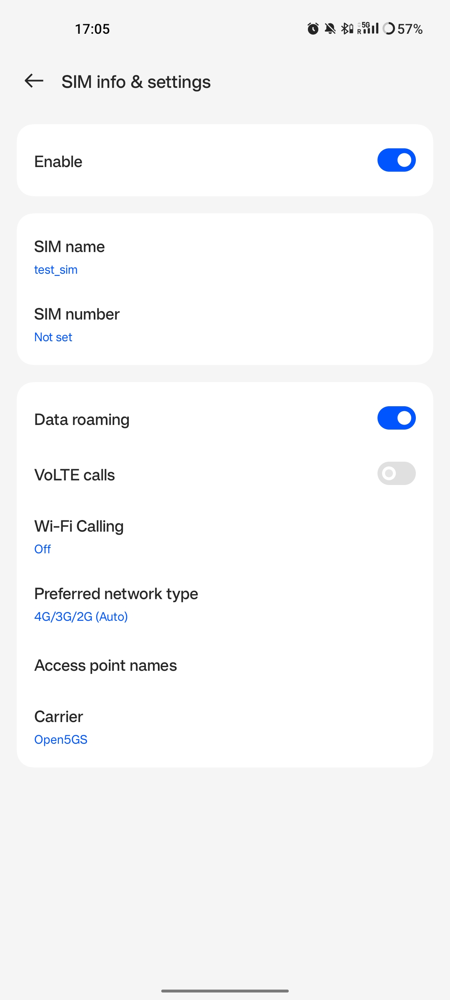
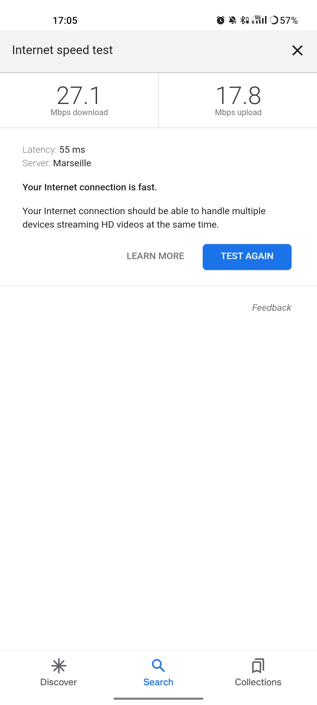

带 COTS UE 的 srsRAN gNB
警告
在蜂窝频段上运行专用 5G SA 网络可能会受到您所在辖区的严格监管。在此之前，请先寻求电信监管机构的批准。
概述
本教程演示如何使用 srsRAN Project 和第 3 方 5G 内核（本例中为 Open5GS）配置支持 5G 的 COTS UE 并将其连接到 5G SA 网络。
要使用 srsRAN Project 将 COTS UE 连接到 5G 网络，用户需要满足以下要求：
一台装有 Linux 操作系统的 PC
srsRAN Project CU/DU
RF-前端兼容srsRAN Project
第三方 5G 核心
支持 5G SA 的 COTS UE
测试 USIM/ISIM/SIM 卡（必须是测试 SIM 或具有已知密钥的可编程卡）
我们还建议使用外部时钟源，例如 octoclock 或 GPSDO
该具体实现使用以下内容：
戴尔 XPS-13（英特尔 i7-10510U CPU），带 Ubuntu 20.04
srsRAN Project CU/DU
B210 USRP
Open5GS 5G 核心
一加8T
带有重新编程凭证的 SysmoISIM-SJA2
Leo Bodnar GPS 参考时钟
设置注意事项
Open5GS
在本示例中，我们使用 Open5GS 作为 5G 内核。
Open5GS 是 5G 核心和 EPC 的 C 语言开源实现。以下链接将为您提供 包含下载和设置 Open5GS 所需的信息，以便可以与 srsRAN Project 一起使用：
现货 UE
您应该确保您的设备能够在 5G SA 模式下运行，并且在 srsRAN Project 支持的频段中运行。
外部时钟
一个 Leo Bodnar GPS 参考时钟 用作此设置的 USRP 时钟源。
外部时钟的使用不是必需的，但它可以减少由于所使用的 RF 前端的内部时钟不准确而可能发生的错误。问题来了 来自 CFO 和 5G 手机所容忍的计时 - SDR 内的板载时钟并不总是足够准确，无法在手机允许的限制内运行。使用 外部时钟比 SDR 板载时钟精确得多，可降低 COTS UE 由于同步问题而无法查看/连接到网络的可能性。
配置
为此设置修改了以下 srsRAN 配置文件：
为此设置修改了以下 Open5GS 配置文件：
网络的各个方面应按以下顺序配置：
gNB
伊西姆
核心
现货 UE
gNB
gNB 使用找到的基本配置示例进行配置 这里，进行一些细微的修改。
该配置较原始示例有以下修改：
设置USRP的时钟源为
内部。如果您使用外部时钟源（例如 Leo Bodnar GPSDO），请将其设置为外部的.将小区的ARFCN设置为
627340。这确保了 gNB 在我们所在地的带宽为 20 MHz 的自由频谱区域中进行广播。PLMN 更改为
90170。使用 OnePlus 8t，我们发现通过强制漫游场景，手机可以更可靠地识别网络并连接。通过在小区中设置不同的PLMN和在电话中设置ISIM来强制漫游场景。
上述修改特定于此处使用的设置。建议将 ARFCN 调整为您的本地设置，以便您在空闲频谱区域中进行传输。
要配置内核和gNB之间的连接，需要设置AMF 地址 至 AMF 的地址。本例中，gNB配置文件中使用默认值，Open5GS配置文件中进行相关更改。
cu_cp:
amf:
addr: 127.0.1.100 # The address or hostname of the AMF.
bind_addr: 127.0.0.1 # A local IP that the gNB binds to for traffic from the AMF.
supported_tracking_areas: # Configure the TA associated with the CU-CP
- tac: 7
plmn_list:
- plmn: "90170"
tai_slice_support_list:
- sst: 1
ru_sdr:
device_driver: uhd # The RF driver name.
device_args: type=b200,num_recv_frames=64,num_send_frames=64 # Optionally pass arguments to the selected RF driver.
-clock: # 指定RF使用的时钟源。
+ 时钟：内部 # 仅当使用 Leo Bodnar GPSDO 作为 10 MHz 参考时才设置为外部。
srate: 23.04 # RF sample rate might need to be adjusted according to selected bandwidth.
otw_format: sc12
tx_gain: 50 # Transmit gain of the RF might need to adjusted to the given situation.
rx_gain: 60 # Receive gain of the RF might need to adjusted to the given situation.
cell_cfg:
- dl_arfcn: 632628 # 下行载波的ARFCN（中心频率）。
+ dl_arfcn：627340
band: 78 # The NR band.
channel_bandwidth_MHz: 20 # Bandwith in MHz. Number of PRBs will be automatically derived.
common_scs: 30 # Subcarrier spacing in kHz used for data.
- plmn: "00101" # gNB 广播的 PLMN。
+ plmn：“90170”
tac: 7 # Tracking area code (needs to match the core configuration).
pci: 1 # Physical cell ID.
注意事项
srsRAN Project 支持直至 Rel. 的所有 NR 频段。 17. 并非所有频段都支持所有 BW，为了确认您的配置正确，您应该 参考 表5.3.5-1 在 TS 38.104.
伊西姆
SIM编程
如前所述，此设置使用 OnePlus 8t，在内部测试期间发现这款手机（和其他 OnePlus 设备）有时在漫游情况下更容易连接到网络。这是通过为小区和手机中的 ISIM 设置不同的 PLMN 来实现的。
ISIM中的MCC、MNC、IMSI和其他凭证可以通过重新编程来设置。我们使用以下步骤对 SysmoISIM-SJA2 进行了重新编程。
下载 模拟仿真 :
git clone https://github.com/osmocom/pysim
光盘 pysim
sudo apt-get install --no-install-recommends \
pcscd libpcsclite-dev \
python3 \
python3-setuptools \
python3-pyscard \
python3-pip
pip3 install -r requirements.txt
然后您可以从以下命令中运行 皮西姆 目录。
检查当前 ISIM 配置：
./pySim-read.py -p0
重新配置 ISIM：
./pySim-prog.py -p0 -s <ICCID> --mcc=<MCC> --mnc=<MNC> -a <ADM-KEY> --imsi=<IMSI> -k <KI> --opc=<OPC>
您至少需要将 PLMN 设置为 00101，也可以选择重新配置 ISIM 的其他方面。对于此设置，使用了以下命令：
./pySim-prog.py -p0 -s 8988211000000689615 --mcc=001 --mnc=01 -a 77190612 --imsi=001010123456789 -k 41B7157E3337F0ADD8DA89210D89E17F --opc=1CD638FC96E02EBD35AA0D41EB6F812F
注意事项
您需要从 SIM 提供商处获取 ICCID、ADM-KEY 和其他安全信息。
SUCI配置
如果您使用 sysmoISIM-SJA2 ISIM（启用 5G）（如本例所示），则需要修改 SIM 卡的 5G 相关字段。特别是，您需要配置或禁用 SUPI 隐藏 (SUCI)。
可以使用以下命令禁用 SUPI 隐藏。你应该更换 <ADM-密钥> 使用相应 SIM 卡的 ADM 密钥。
注意事项
验证_adm 成功时不打印任何输出。如果你看到类似的东西 “SW 不匹配：预期为 9000，结果为 6982” ADM 密钥不正确。请记住，之后
由于 ADM 密钥错误，3 次写入尝试失败，SIM 卡被阻止且无法再次重写。
pySIM-shell (MF)> 选择 MF
pySIM-shell (MF)> 选择 ADF.USIM
pySIM-shell (MF/ADF.USIM)> 选择 EF.UST
pySIM-shell (MF)> verify_adm <ADM-KEY>
pySIM-shell (MF/ADF.USIM/EF.UST)> ust_service_deactivate 124
pySIM-shell (MF/ADF.USIM/EF.UST)> ust_service_deactivate 125
完成这些步骤后 UST服务124 和 125 应该被禁用。您可以使用以下命令验证 ISIM 配置：
./pySim-read.py -p0
有关 pySim 和 SUCI 配置的更多信息，请参阅 本指南 在 pySim 文档中。
添加用户控制的 PLMN
如果要将用户控制的 PLMN 添加到 USIM，可以通过扩展 EF_PLMNwACT EF 来实现。
以下命令将添加 PLMN 90170 到 USIM。首先验证当前的 PLMN 列表应该
包括您的家庭 PLMN，例如 00101。然后与 编辑二进制解码 您可以添加新的 PLMN。
pySIM-shell (MF)> 选择 MF
pySIM-shell (MF)> 选择 ADF.USIM
pySIM-shell (MF/ADF.USIM)> 选择 EF.PLMNwAcT
pySIM-shell (00:MF/ADF.USIM/EF.PLMNwAcT)> read_binary_decoded
[
{
“MCC”: "001",
“跨国公司”: "01",
“行动”: [
“E-UTRAN NB-S1”,
“E-UTRAN WB-S1”,
“EC-GSM-物联网”,
“全球移动通信系统”,
“GSM 紧凑型”,
“NG-RAN”,
“UTRAN”,
“cdma2000 1xRTT”,
“cdma2000 HRPD”
]
}
..
pySIM-shell (00:MF/ADF.USIM/EF.PLMNwAcT)> edit_binary_decoded
{
“MCC”: "901",
“跨国公司”: "70",
“行动”: [
“E-UTRAN NB-S1”,
“E-UTRAN WB-S1”,
“EC-GSM-物联网”,
“全球移动通信系统”,
“GSM 紧凑型”,
“NG-RAN”,
“UTRAN”,
“cdma2000 1xRTT”,
“cdma2000 HRPD”
]
}
Open5GS
对于此设置，Open5GS 作为机器上的服务运行，这是运行 Open5GS 的“默认”方式，如其文档中所述。如果您在 docker 容器或其他环境中运行 open5GS，您的配置会略有不同。
Open5GS 5G 核心快速入门指南 全面概述了如何配置 Open5GS 以作为 5G 内核运行。
要正确配置核心，需要执行以下步骤：
配置核心以连接到 gNB。
配置 PLMN 和 TAC 值，使其与 gNB 配置中的值相同。
通过 Open5GS WebUI 将 ISIM 凭据注册到订阅者列表。
amf.yml
在AMF配置文件中需要进行以下修改：
设置 NGAP 地址，这应该与 gNB 配置文件中看到的 AMF 地址相同
设置MCC、MNC和TAC值，使其与gNB配置文件中使用的PLMN和TAC相同，但与ISIM的不同
ngap:
- - 地址：127.0.0.5
+ - 地址：127.0.1.100
metrics:
addr: 127.0.0.5
port: 9090
guami:
- plmn_id:
- MCC：999
- 跨国公司：70
+ MCCC：901
+ 跨国公司：70
amf_id:
region: 2
set: 1
tai:
- plmn_id:
- MCC：999
- 跨国公司：70
+ MCCC：901
+ 跨国公司：70
- 塔克：1
+ 塔克：7
plmn_support:
- plmn_id:
- MCC：999
- 跨国公司：70
+ MCCC：901
+ 跨国公司：70
upf.yml
在UPF配置文件中需要进行以下修改：
设置 GTPU 地址，这应该与 gNB 配置文件中看到的 AMF 地址相同
upf:
pfcp:
- addr: 127.0.0.7
gtpu:
- - 地址：127.0.0.7
+ - 地址：127.0.1.100
subnet:
- addr: 10.45.0.1/16
- addr: 2001:db8:cafe::1/48
metrics:
- addr: 127.0.0.7
port: 9090
nrf.yml
在NRF配置中，需要进行以下修改：
设置 PLMN 以匹配 gNB 和 AMF 配置文件的 PLMN
检查AMF的地址是否与gNB配置文件的地址匹配
logger:
file:
path: /var/log/open5gs/nrf.log
# level: info # fatal|error|warn|info(default)|debug|trace
global:
max:
ue: 1024 # The number of UE can be increased depending on memory size.
# peer: 64
nrf:
serving: # 5G roaming requires PLMN in NRF
- plmn_id:
- MCC：999
- 跨国公司：70
+ MCCC：901
+ 跨国公司：70
sbi:
server:
- addr: 127.0.0.10
port: 7777
用户数据库
您可以看到如何向核心注册订户信息 这里.
您至少需要填写与订阅者相关的 IMSI、AMF、K 和 OPc，以及 APN。
注意事项
将 APN 设置为 IPv4，而不是 IPv4/6 或 IPv6。
现货 UE
要配置 OnePlus 8t 连接到网络，必须执行以下步骤：
启用 ISIM
启用 5G SA 模式
启用数据漫游
禁用 VoLTE 和/或 VoNR
配置接入点
仅强制 NR
启用 ISIM、5G 和数据漫游
配置 UE 的第一步是确保启用 SIM 和 5G NR 运营商的使用。在此示例中，ISIM 放置在 SIM 卡托盘 1 中，并且不存在其他 SIM 卡。
在第一张图中，您可以看到 ISIM 已正确找到，并且移动数据已启用。在第二张图中，您可以看到 ISIM 已启用，数据漫游已启用，并且 5G 已设置为首选网络类型。

如果您看不到 5G 选项中 首选 网络 类型，那么您可能需要激活它。这可以在开发者选项下启用，如果您无权访问开发者选项，请参阅 本指南。
在 开发商 选项 去 网络 并启用 5G，您可能还需要设置 5G 网络 模式 到 NSA + SA 模式
这里需要启用的最后一个选项是 数据 漫游，如第二张图片所示。
在某些手机中，还可能有一个配置选项 语音信噪比 和/或 语音通话，重要的是要确保这是 残疾人.
配置接入点

上图显示了本示例中使用的 APN 配置。需要注意的要点如下：
接入点网络
名称是任意的，并且可以具有任何字符串值。的
接入点网络选项需要设置为与深度神经网络/APNOpen5GS 用户注册中设置的选项。的
接入点网络 协议和接入点网络 漫游 协议都设置为 IPv4 如 Open5GS 用户注册中所示。设置为 IPv6 或 IPv4/6 可能会导致互联网连接问题。所有其他选项均保留默认值。
力降噪
应用 5G 开关 - 力 5G 仅 可用于强制您的设备仅看到 5G NR 网络。这适用于未 root 的设备，并用作此设置的一部分以确保
该设备可以看到并连接到网络。尽管不需要手机连接，但它可以更轻松地始终连接到网络。
应用程序的 Play 商店页面如下所示：
当您运行该应用程序时，您可以选择 NR 仅 从 套装 首选 网络 类型 菜单。这看起来像下面这样：
当您选择此选项时，您可能会看到 首选 网络 类型 SIM 配置菜单中的字段更改为 4G/3G/2G （自动） 如屏幕截图中所示 连接到网络部分。
这很好，可以忽略。在应用程序中选择 NR 后，您无需从 SIM 配置菜单中选择 5G。
连接 COTS UE
要将 COTS UE 连接到网络，必须在正确配置电话和网络后执行以下步骤：
运行gNB并确保其正确连接到核心
从 UE 搜索网络
选择并连接到网络
验证附加
流数据
设置网络
检查Core是否正常运行
首先，最好检查 Open5GS 是否正确运行，这可以通过以下命令完成：
ps aux | grep open5gs
如果核心运行正确，则应给出以下输出：
open5gs 1601 0.0 0.0 141680 15872 ? Ssl 10:36 0:00 /usr/bin/open5gs-bsfd -c /etc/open5gs/bsf.yaml
open5gs 1606 0.0 0.1 134452 24840 ? Ssl 10:36 0:01 /usr/bin/open5gs-nrfd -c /etc/open5gs/nrf.yaml
open5gs 1613 0.0 0.2 147068 41720 ? Ssl 10:36 0:02 /usr/bin/open5gs-scpd -c /etc/open5gs/scp.yaml
open5gs 2663 0.0 0.1 2801740 16788 ? Ssl 10:36 0:02 /usr/bin/open5gs-hssd -c /etc/open5gs/hss.yaml
open5gs 2675 0.0 0.1 2800268 16568 ? Ssl 10:36 0:02 /usr/bin/open5gs-pcrfd -c /etc/open5gs/pcrf.yaml
open5gs 2676 0.0 0.1 185572 21584 ? Ssl 10:36 0:00 /usr/bin/open5gs-pcfd -c /etc/open5gs/pcf.yaml
open5gs 2690 0.0 0.1 169668 20768 ? Ssl 10:36 0:00 /usr/bin/open5gs-udrd -c /etc/open5gs/udr.yaml
open5gs 3065 0.0 0.1 155984 20136 ? Ssl 10:36 0:00 /usr/bin/open5gs-amfd -c /etc/open5gs/amf.yaml
open5gs 3067 0.0 0.0 136052 15960 ? Ssl 10:36 0:00 /usr/bin/open5gs-ausfd -c /etc/open5gs/ausf.yaml
open5gs 3071 0.0 0.0 2778684 14404 ? Ssl 10:36 0:02 /usr/bin/open5gs-mmed -c /etc/open5gs/mme.yaml
open5gs 3074 0.0 0.0 134300 15416 ? Ssl 10:36 0:00 /usr/bin/open5gs-nssfd -c /etc/open5gs/nssf.yaml
open5gs 3079 0.0 0.1 260852 19656 ? Ssl 10:36 0:00 /usr/bin/open5gs-sgwcd -c /etc/open5gs/sgwc.yaml
open5gs 3081 0.0 0.1 249660 17840 ? Ssl 10:36 0:00 /usr/bin/open5gs-sgwud -c /etc/open5gs/sgwu.yaml
open5gs 3084 0.0 0.2 3127048 44456 ? Ssl 10:36 0:02 /usr/bin/open5gs-smfd -c /etc/open5gs/smf.yaml
open5gs 3091 0.0 0.1 136072 17136 ? Ssl 10:36 0:00 /usr/bin/open5gs-udmd -c /etc/open5gs/udm.yaml
open5gs 3099 0.0 0.1 274176 24588 ? Ssl 10:36 0:00 /usr/bin/open5gs-upfd -c /etc/open5gs/upf.yaml
总共应该有 16 个进程在运行。
核心运行后，在测试期间查看 AMF 日志会很有帮助。这使得 gNB 何时连接以及 COTS UE 何时成功连接到网络变得清晰。
要查看它，您可以运行以下命令：
tail -f /var/log/open5gs/amf.log
您应该看到类似于以下内容的输出：
04/03 10:36:52.012: [sctp] INFO: AMF initialize...done (../src/amf/app.c:33)
04/03 10:36:52.049: [sbi] INFO: [aea4db10-d1fa-41ed-916b-e56218b693e5] (NRF-notify) NF registered (../lib/sbi/nnrf-handler.c:632)
04/03 10:36:52.049: [sbi] INFO: [aea4db10-d1fa-41ed-916b-e56218b693e5] (NRF-notify) NF Profile updated (../lib/sbi/nnrf-handler.c:642)
04/03 10:36:52.049: [sbi] WARNING: [aea4db10-d1fa-41ed-916b-e56218b693e5] (NRF-notify) NF has already been added (../lib/sbi/nnrf-handler.c:636)
04/03 10:36:52.049: [sbi] INFO: [aea4db10-d1fa-41ed-916b-e56218b693e5] (NRF-notify) NF Profile updated (../lib/sbi/nnrf-handler.c:642)
04/03 10:36:52.049: [sbi] WARNING: NF EndPoint updated [127.0.0.12:80] (../lib/sbi/context.c:1618)
04/03 10:36:52.049: [sbi] WARNING: NF EndPoint updated [127.0.0.12:7777] (../lib/sbi/context.c:1527)
04/03 10:36:52.238: [app] INFO: SIGHUP received (../src/main.c:58)
04/03 10:36:52.350: [sbi] INFO: [aea6bae8-d1fa-41ed-904f-f78f7a58f5f3] (NRF-notify) NF registered (../lib/sbi/nnrf-handler.c:632)
04/03 10:36:52.350: [sbi] INFO: [aea6bae8-d1fa-41ed-904f-f78f7a58f5f3] (NRF-notify) NF Profile updated (../lib/sbi/nnrf-handler.c:642)
运行gNB
要使用上面的配置文件运行 gNB，请导航至 srsRAN_Project/build/apps/gnb 并使用以下命令：
sudo ./gnb -c gnb_b210_20MHz_oneplus_8t.yml
上述命令假设配置文件位于同一文件夹中。
gNB 运行后，您应该看到以下输出：
--== srsRAN gNB (commit fbe73a49c) ==--
Connecting to AMF on 127.0.1.100:38412
[INFO] [UHD] linux; GNU C++ version 9.3.0; Boost_107100; UHD_4.0.0.0-666-g676c3a37
[INFO] [LOGGING] Fastpath logging disabled at runtime.
Making USRP object with args '类型=b200，num_recv_frames=64，num_send_frames=64'
[INFO] [B200] Detected Device: B210
[INFO] [B200] Operating over USB 3.
[INFO] [B200] Initialize CODEC control...
[INFO] [B200] Initialize Radio control...
[INFO] [B200] Performing register loopback test...
[INFO] [B200] Register loopback 测试 passed
[INFO] [B200] Setting master clock rate selection to “自动”.
[INFO] [B200] Asking 为了 clock rate 16.000000 MHz...
[INFO] [B200] Actually got clock rate 16.000000 MHz.
[INFO] [MULTI_USRP] Setting master clock rate selection to “手册”.
[INFO] [B200] Asking 为了 clock rate 23.040000 MHz...
[INFO] [B200] Actually got clock rate 23.040000 MHz.
Cell PCI=1, 体重=20 MHz, dl_arfcn=627340 (n78), dl_频率=3410.1 MHz, dl_ssb_arfcn=627264, ul_频率=3410.1 兆赫兹
==== gNodeB 开始了 ===
Type <t> to view trace
如果与核心的连接成功，您应该从 AMF 日志中看到以下内容：
04/03 13:25:13.469: [amf] INFO: gNB-N2 accepted[127.0.0.1]:47633 在 ng-path module (../src/amf/ngap-sctp.c:113)
04/03 13:25:13.469: [amf] INFO: gNB-N2 accepted[127.0.0.1] 在 master_sm module (../src/amf/amf-sm.c:706)
04/03 13:25:13.469: [amf] INFO: [Added] Number of gNBs is now 1 (../src/amf/context.c:1034)
连接到网络
COTS UE 现在可以搜索网络。为此，请导航至 移动网络 > SIM 1 > 运营商 并搜索网络。
当您输入 承运人 您的设备可能会自动搜索可用的运营商菜单，如果没有，您可以从屏幕右上角手动选择搜索选项。
如果设备可以成功接收 SIB（特别是 SIB1）并“查看”网络，则会出现可用运营商列表。它将显示为 Open5GS 5G 或 90170 5G。如果您的 PLMN 是其他内容，它可能会显示为 [PLMN] 5G.
下图显示了它的样子：

选择网络运营商，在本例中 Open5GS 5G，然后 UE 应连接到网络。
要确认连接是否成功，您可以监视 AMF 日志和 gNB 控制台输出。
AMF 日志应类似于以下内容：
04/27 13:16:31.746: [amf] INFO: InitialUEMessage (../src/amf/ngap-handler.c:361)
04/27 13:16:31.746: [amf] INFO: [Added] Number of gNB-UEs is now 1 (../src/amf/context.c:2036)
04/27 13:16:31.746: [amf] INFO: RAN_UE_NGAP_ID[0] AMF_UE_NGAP_ID[78] TAC[7] CellID[0x0] (../src/amf/ngap-handler.c:497)
04/27 13:16:31.746: [amf] INFO: [suci-0-001-01-0-0-0-0000068960] Known UE by 5G-S_TMSI[AMF_ID:0x20040,M_TMSI:0xdd00ff1a] (../src/amf/context.c:1402)
04/27 13:16:31.746: [gmm] INFO: Registration request (../src/amf/gmm-sm.c:134)
04/27 13:16:31.746: [gmm] INFO: [suci-0-001-01-0-0-0-0000068960] 5G-S_GUTI[AMF_ID:0x20040,M_TMSI:0xdd00ff1a] (../src/amf/gmm-handler.c:169)
04/27 13:16:31.913: [gmm] INFO: [imsi-001010000068960] Registration 完成 (../src/amf/gmm-sm.c:1063)
04/27 13:16:31.913: [amf] INFO: [imsi-001010000068960] Configuration update 命令 (../src/amf/nas-path.c:389)
04/27 13:16:31.913: [gmm] INFO: UTC [2023-04-27T13:16:31] Timezone[0]/DST[0] (../src/amf/gmm-build.c:502)
04/27 13:16:31.913: [gmm] INFO: LOCAL [2023-04-27T13:16:31] Timezone[0]/DST[0] (../src/amf/gmm-build.c:507)
04/27 13:16:32.105: [gmm] INFO: UE SUPI[imsi-001010000068960] DNN[srsapn] S_NSSAI[SST:1 SD:0xffffff] (../src/amf/gmm-handler.c:1042)
gNB 跟踪应显示以下内容：
-------------DL----------------|------------------UL--------------------
pci rnti cqi mcs brate ok nok (%) | pusch mcs brate ok nok (%) bsr
1 4601 15 15 4.3k 7 0 0% | 21.3 23 17k 4 0 0% 0.0
1 4601 15 27 287k 84 0 0% | 23.1 27 233k 39 0 0% 0.0
1 4601 15 28 1.2k 1 0 0% | 21.8 28 8.7k 2 0 0% 0.0
1 4601 15 0 0 0 0 0% | n/a 0 0 0 0 0% 0.0
1 4601 15 0 0 0 0 0% | n/a 0 0 0 0 0% 0.0
1 4601 15 0 0 0 0 0% | n/a 0 0 0 0 0% 0.0
1 4601 12 0 0 0 0 0% | n/a 0 0 0 0 0% 0.0
1 4601 15 0 0 0 0 0% | n/a 0 0 0 0 0% 0.0
1 4601 15 28 53k 10 0 0% | 24.6 26 55k 32 0 0% 0.0
1 4601 15 28 7.7k 4 0 0% | 22.7 28 17k 4 0 0% 0.0
1 4601 15 0 0 0 0 0% | n/a 0 0 0 0 0% 0.0
流量与测试
速度测试
直接从谷歌运行速度测试给出以下结果：

运行此测试时，在 gNB 控制台上观察到以下情况：
上行测试
-------------DL----------------|------------------UL--------------------
pci rnti cqi mcs brate ok nok (%) | pusch mcs brate ok nok (%) bsr
1 4601 15 28 23M 820 8 0% | 24.3 27 376k 90 0 0% 0.0
1 4601 15 28 31M 1070 6 0% | 22.4 28 141k 33 0 0% 0.0
1 4601 15 28 31M 1068 8 0% | 23.7 27 155k 39 0 0% 0.0
1 4601 15 28 31M 1064 6 0% | 23.3 28 134k 29 0 0% 0.0
1 4601 15 28 31M 1060 9 0% | 22.5 28 150k 32 0 0% 0.0
1 4601 15 28 31M 1071 6 0% | 23.1 27 323k 68 0 0% 0.0
下行测试
-------------DL----------------|------------------UL--------------------
pci rnti cqi mcs brate ok nok (%) | pusch mcs brate ok nok (%) bsr
1 4601 15 27 548k 447 3 0% | 17.1 25 17M 596 4 0% 150k
1 4601 15 27 598k 456 6 1% | 17.4 25 17M 596 4 0% 150k
1 4601 15 27 502k 468 2 0% | 17.5 25 17M 600 0 0% 150k
1 4601 15 27 544k 449 2 0% | 18.2 26 18M 598 2 0% 150k
1 4601 15 27 470k 448 2 0% | 18.7 27 19M 595 5 0% 150k
1 4601 15 27 485k 455 6 1% | 18.6 27 19M 594 6 1% 150k
视频测试
下面显示了从互联网传输视频时看到的示例跟踪输出：
-------------DL----------------|------------------UL--------------------
pci rnti cqi mcs brate ok nok (%) | pusch mcs brate ok nok (%) bsr
1 4601 14 27 1.3M 111 15 11% | 22.6 28 109k 25 0 0% 0.0
1 4601 15 27 1.9M 180 4 2% | 22.4 28 109k 25 0 0% 0.0
1 4601 15 28 3.3M 302 0 0% | 22.7 28 109k 25 0 0% 0.0
1 4601 15 28 5.5M 489 0 0% | 22.5 28 109k 25 0 0% 0.0
1 4601 15 28 7.6M 553 0 0% | 22.5 28 109k 25 0 0% 0.0
1 4601 15 28 9.7M 630 0 0% | 22.8 28 109k 25 0 0% 0.0
1 4601 15 28 12M 651 0 0% | 22.7 28 109k 25 0 0% 0.0
1 4601 15 28 12M 656 1 0% | 22.8 28 112k 27 0 0% 0.0
1 4601 15 28 12M 679 0 0% | 22.8 28 109k 25 0 0% 0.0
1 4601 15 28 12M 634 1 0% | 22.6 28 109k 25 0 0% 0.0
1 4601 15 28 7.8M 464 0 0% | 22.3 28 83k 19 0 0% 0.0
故障排除
网络不可见
无法附加
如果您可以看到网络，但无法连接，请测试以下内容：
检查订阅者是否已正确添加到 Open5GS 用户列表中。如果修改后没有重新启动 Open5Gs 服务，请重新启动并重试连接 UE。 Open5GS 不支持对订阅者或配置文件进行即时修改。
设备可能无法 PRACH。如果您使用 NSG，那么您将能够看到 UE 和 gNB 之间正在交换的控制消息，检查此项以查看 PRACH 是否成功。如果没有，请检查以下事项：
信号质量（使用 Maia SDR、Fosphor 或其他工具）；您可以调整 Tx 和 Rx 增益来补偿这一点。如果有任何商业小区在同一频谱区域内进行广播，也可能会导致 RF 问题。
时间安排问题；如果时序存在差异，则 UE 将无法连接。使用外部时钟来克服这个问题。
无法访问互联网
如果您的设备已连接到网络但无法访问互联网，则很可能是 APN 配置存在问题。确保 UE 和 Core 中的 APN 配置的凭据和信息相同。主要检查的事项有：
APN 在电话和核心中应具有相同的 ID
将协议设置为 IPv4
确保 UE 上禁用 VoNR/ VoLTE
重启所有Open5GS服务并重试
UE 几分钟后断开连接
如果在连接后几分钟内未配置 IMS，某些 Android 智能手机会默默地断开网络连接。我们通过 Google Pixel 6 确认了此行为，超时时间为 180 秒（3 分钟），但它也可能适用于其他设备和供应商。
无需配置 IMS 的可能解决方案是设置无限超时或禁用智能手机中的该功能。为此，请通过拨打电话打开隐藏的 IMS 设置菜单 *#*#0702#*#*，然后更改以下两个设置之一：
无限超时：设置
NR_TIMER_WAIT_IMS_REGISTRATION从默认180到-1禁用超时：设置
SUPPORT_IMS_NR_REGISTRATION_TIMER从默认1到0
示例：

{kind=link}
{kind=link}
{kind=link}
{kind=link}
{kind=link}
{kind=link}
{kind=link}
{kind=link}
智能手机会根据每个 IMSI 在重新启动后永久存储这些设置，即，如果您更改 SIM 卡，UE 会分别记住每个 SIM 卡的设置。
测试设备
您可以找到经过 SRS 团队测试并由社区报告的所有设备的列表 这里。此列表包含有关正在使用的设备和网络配置的信息。